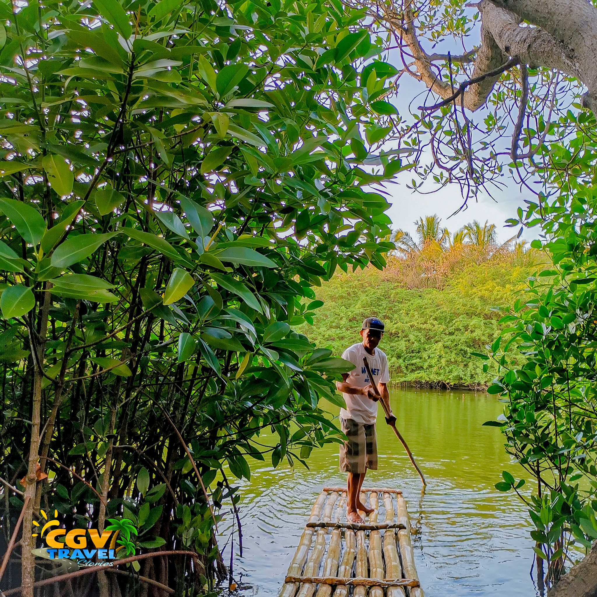

The second southernmost town of the province of Laguna and in the Philippines, Santa Cruz has a diverse, beautiful past. It is known as the strong Spanish colonial practice...

Mangroves
Mangroves
Mangroves
Mangroves
×
Mangroves
Click Your Desired Destination For Directions and Map
The mangrove Farms are developing tourist spots that are hidden in the suburbs of the municipality of Sta. Cruz Ilocos Sur. Those mangroves are not only design to attract tourist but also create green barrier for the people around those mangroves.
Las-Ud: Replica of Mexico’s basilica, with stunning stained glass and retablo.
Pantar: A peaceful site, deeply rooted in local devotion.
Villa Hermosa: A historical monument constructed during the Spanish era.
Our Lady Of Mt. Carmel: Known for its charm and regular pilgrimages.